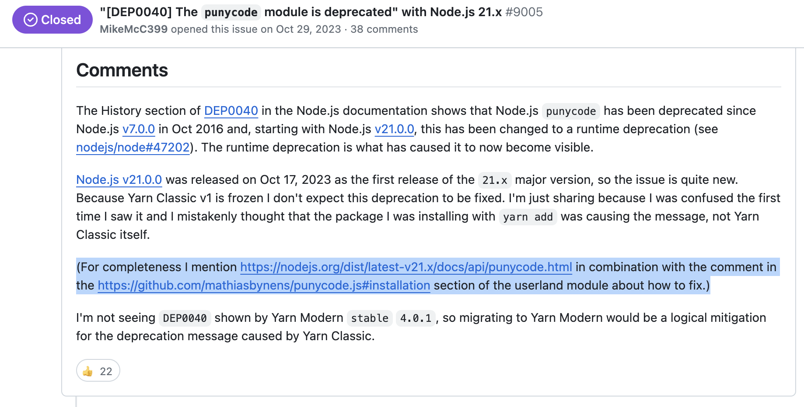
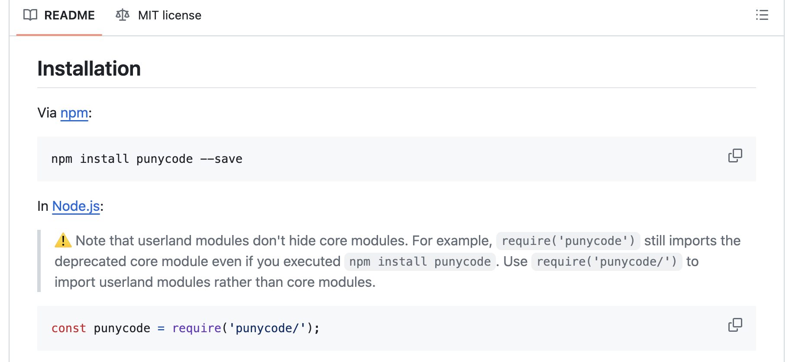
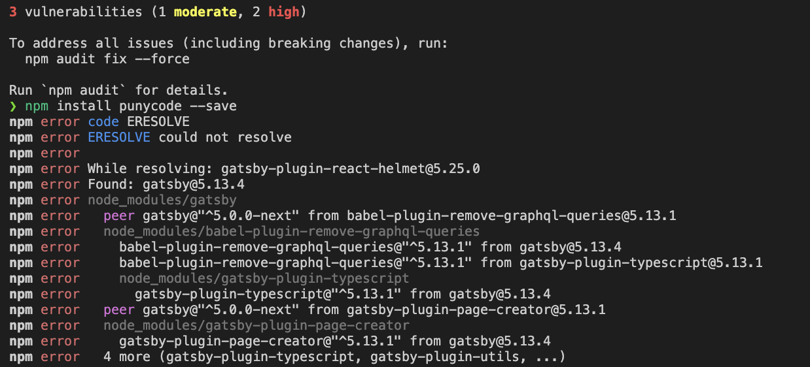

[DEP0040] DeprecationWarning: The punycode module is deprecated.
Background
I was trying to set up my blog while following the instructions in the Gatsby documentation. However, I encountered a DeprecationWarning for the punycode module.
Problem
(node:98880) [DEP0040] DeprecationWarning: The `punycode` module is deprecated. Please use a userland alternative instead.
(Use `node --trace-deprecation ...` to show where the warning was created)
Solution Flow
- Searching for solutions on the internet
"[DEP0040] The punycode module is deprecated" with Node.js 21.x

I am using npm so everything else regarding yarn is irrelevant.
- Checking the Punycode documentation

I tried installing the punycode module using the command npm install punycode but it did not work. Instead, I found out that the problem might be a compatibility issue between the gatsby-transformer-remark and gatsby.

Downgrading my gatsby-transformer-remark version to ^4.0.0 resolved the issue.